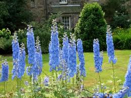

Pied d'alouette ou Delphinium

Pied d'alouette ou Delphinium (Consolida regalis de la famille des Renonculacées)
Toxique pour le Korat.
Partie toxique pour les chats en général et le Korat en particulier :
Toute la plante.
Symptômes du processus pathologique :
On observe principalement des convulsions, une grande excitation avec mydriase, spasmes, incoordination puis paralysie générale. Le sujet peut également présenter de la diarrhée et des vomissements, une hyper salivation, des troubles cardiaques (arythmie, fibrillation ventriculaire) et dans les cas sévères une dyspnée avec bradypnée évoluant vers la mort par asphyxie.
Origine de la toxicité (principe actif) :
Delphinine, staphysine, ajacine et alcaloïdes terpéniques.